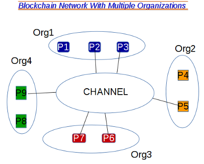
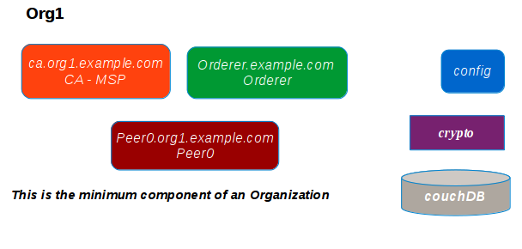
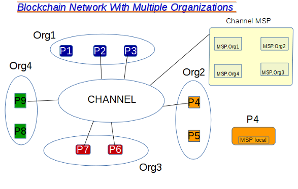

HYPERLEDGER COMPOSER
Hyperledger is a project of open source blockchain started by the Linux Fondation for a tecnology development for business and commercial use. The Hyperledger project is composed from any Distribuited Ledger Tecnology, DLT, Framework and any tools. Here we talk about the DLT framework Hyperledger Fabric with the tool Hyperledger Composer. The DLT is a decentralized system for exchange of VALUE.The fondamental element are:
- ASSETS - represents Value and can be tangible or intangible
- PARTECIPANT - user that can use the bolckchain
- TRANSACTIONS - The transaction that can be executed into the blockchain
- EVENT - The transaction can emit events
The administrator of network set the user that can access to network and the relative authentication and autorization.
The administrator know identities partecipant and manage the Access Control and the role assigned with restrictions to the action for every user.
With the access control the admin manage the transaction that a partecipant can view and execute, confidential transactions.
No miner is requested because transaction validations is done by administrator of network. No concensus with method how proof-of-work or proof-of-authority.
There aren't cryptocurrency and the network is programmable. The Chaincode automates the business process and the transactions executation.
We use Composer for creation and management of business network application, BNA, and javascript for coding transactions.
 It offer tools for architects, development, administration and operations for business analyst.
Offer an object oriented language for defining the domain model of bna and support javascript applications.
In the web browser storage composer offer a playground application how simulate and test your BNA.
Another important tool is the Composer Rest Server that permit the connession between the web interface with the blockchain.
The Rest Server allows us to execute the CRUD(Create, Read, Update, Delete) operation on blockchain.
We can operate with Javascript for CRUD operation on assets, transactions and events, too.
We can create a Consortium creating a channel with two or more organization and more than peer.
Every organization has one Membership Service Provider (MSP) that manage the roles and access restrictions.  MSP of every organization can manage autority for their member, create and revoke the identities. Every Peer has a local MSP for manage local identity and every network has at least one MSP. The great organization have more MSP for example a Org1-MSP-National, Org1-MSP-International, Org1-MSP-Distribution ecc...
In the Multi-organization channel there is a MSP for the channel consisting in the MSP of the Organizaztion that are part of the channel. In the image below an example of a channel composed by Org1, Org2, Org3 and Org4. How you can see not all the peer partecipape of channel . The MSP of every Organization allow the peer to partecipate and role of every peer through the Identity. In the image below you can see the channel with the MSP.
 The Identity is managed by way of certificates by Fabric CA a built-in certificate autority that create, update and delete the identities. How you can see in the Graph the file ca.org1.exemple.com contains tha CA autority and MSP. Into the Organization all node are not equal, there is a node Orderers, a node Peer and node Client. The node Peers is connect with the channel. There is a Peer Anchor and a node Peer Endorser. The endorser policy identifies the node Endorser that for every trnsactions verify if it is ok. after this verification the transaction is executed in the blockchain.
 This is the Consensus process, it is composed in three phases. In the first, the proposal, the client asks execution
of transaction to Endorser peer, it asks the test of transaction to test peers defined into the endorsement policy. This peers
return the result of test to endorser and if the result are ok the process go on. In the second phase, the packaging, the endorser create the package
with all the transaction that have successful to create a block that will go inserted into all peers included endorser peer.
The third phase is the validation, the endorser send the block to all peers and verify and validation that the ledger is updated in all peers in the blockchain network.
This is the Consensus process, it is composed in three phases. In the first, the proposal, the client asks execution
of transaction to Endorser peer, it asks the test of transaction to test peers defined into the endorsement policy. This peers
return the result of test to endorser and if the result are ok the process go on. In the second phase, the packaging, the endorser create the package
with all the transaction that have successful to create a block that will go inserted into all peers included endorser peer.
The third phase is the validation, the endorser send the block to all peers and verify and validation that the ledger is updated in all peers in the blockchain network.
In the image to our left we can see the client that send the transaction T1 to endorser which send the T1 transaction to peer P1, P2, P3 that then answer to endorser the result ot test. If all is allright the endorser send the transaction for execution and update the blockchain to all peer from P1 to Pn.
The Anchor peer receive request from client and data from orderers after align all peers of the organization. The Orderer peer ensure consistency of ledger data across nodes and order of transactions.
 The scalability of model is insured, every organization can avoid all peers that she want.Any peer of an organization can take part
to other organization if permit granted by the network administrator. How you can see in next graph a Organization can
take part to different channel.
The chaincode can be managed with the languages go, java and javascript.
The scalability of model is insured, every organization can avoid all peers that she want.Any peer of an organization can take part
to other organization if permit granted by the network administrator. How you can see in next graph a Organization can
take part to different channel.
The chaincode can be managed with the languages go, java and javascript. The state of assets is mutable because is the ledger that respresente the change of value of assets while the transaction log is immutable because it contains all the transactions done. Recreating the transactions log we recreate the state of assets.
For test hyperledger use Solo for one node but for production use KAFKA Apache for multi-user setup and connection all node.
Install Hyperledger Fabric and Composer
Prerequisits for install Hyperledger Fabric
Before you install hyperledger on your system you must have installed the following applications :
Nodejs with npm
Git
Python
Yeoman
Un IDE for example Visual Studio and install the Hyperledger Composer Extension for VSCode
for install Hyperledger Fabric and Composer on ubuntu machine in terminal you must launch the following command :
npm install -g composer-cli@latest
npm install -g composer-rest-server@latest
npm install -g generator-hyperledger-composer@latest
npm install -g yo
If you want you can install the playground web browser storage for test the BNA.
Now you must create the following directory
Launch the command for download file for start and stop hyperledger
curl -O https://raw.githubusercontent.com/hyperledger/composer-tools/master/packages/fabric-dev-servers/fabric-dev-servers.tar.gz
tar -xvf fabric-dev-servers.tar.gz
Launch the command for export file downloaded
cd ~/fabric-dev-servers
export FABRIC_VERSION=hlfv12
./downloadFabric.sh
Now you can start the hyperledger Fabric
cd ~/fabric-dev-servers
/fabric-dev-servers$./startFabric.sh
HYPERLEDGER START LOG
mecbar@linux:~$ cd ~/fabric-dev-servers
mecbar@linux:~/fabric-dev-servers$ ./startFabric.sh
Development only script for Hyperledger Fabric control
Running 'startFabric.sh'
FABRIC_VERSION is set to 'hlfv12'
FABRIC_START_TIMEOUT is unset, assuming 15 (seconds)
Removing peer0.org1.example.com ... done
Removing ca.org1.example.com ... done
Removing couchdb ... done
Removing orderer.example.com ... done
Removing network composer_default
Creating network "composer_default" with the default driver
Creating couchdb ...
Creating ca.org1.example.com ...
Creating orderer.example.com ...
Creating couchdb
Creating orderer.example.com
Creating couchdb ... done
Creating peer0.org1.example.com ...
Creating ca.org1.example.com ... done
Congratulation ! Now you are ready to go wyth hiperledger !
mecbar@linux:~/$ ./restartFabric.sh
Starting ca.org1.example.com ... done
Starting couchdb ... done
Starting orderer.example.com ... done
Starting peer0.org1.example.com ... done
mecbar@linux:~/$ ./stopFabric.sh
Stopping peer0.org1.example.com ... done
Stopping orderer.example.com ... done
Stopping ca.org1.example.com ... done
Stopping couchdb ... done
mecbar@linux:~/fabric-dev-servers$ ./createPeerAdminCard.sh
Development only script for Hyperledger Fabric control
Running 'createPeerAdminCard.sh'
FABRIC_VERSION is set to 'hlfv12'
FABRIC_START_TIMEOUT is unset, assuming 15 (seconds)
Using composer-cli at v0.20.0
Successfully created business network card file to
Output file: /tmp/PeerAdmin@hlfv1.card
Command succeeded
Deleted Business Network Card: PeerAdmin@hlfv1
Command succeeded
Successfully imported business network card
Card file: /tmp/PeerAdmin@hlfv1.card
Card name: PeerAdmin@hlfv1
Command succeeded
The following Business Network Cards are available:
Connection Profile: hlfv1
Issue composer card list --card < Card Name > to get details a specific card
Command succeeded
Hyperledger Composer PeerAdmin card has been imported, host of fabric specified as 'localhost'
mecbar@linux:~/MYPROJECT/dist$ yo hyperledger-composer
Welcome to the Hyperledger Composer project generator
? Please select the type of project: Angular
You can run this generator using: 'yo hyperledger-composer:angular'
Welcome to the Hyperledger Composer Angular project generator
? Do you want to connect to a running Business Network? Yes
? Project name: ProjectName
? Description: Hyperledger Composer Angular project
? Author name: mecbar
? Author email: mecbar@mecbar.com
? License: Apache-2.0
? Name of the Business Network card: admin@projectname
? Do you want to generate a new REST API or connect to an existing REST API? Generate a new REST API
? REST server port: 3000
? Should namespaces be used in the generated REST API? Always use namespaces
Created application!
Now the application is ready. You must start the Composer Rest Server and after launch the app with the command
npm start and go to link localhost:4200 in the web browser.
namespace org.project.one.view
participant User identified by participantId {
  o String participantId
  o String firstName
  o String lastName
}
asset nameAsset identified by numberId {
  o String       numberId
  o DateTime     data
  o Double       field1
  o String       field2
  --> otherAsset    fieldId
}
asset otherAsset identified by fieldId {
 o String      fieldId
 o String      field4
}
transaction   nameTransaction {
 --> otherAsset    field 
 o String      newfield4
}
event primeEvent {
  --> otherAsset  field
  o String oldValue
  o String newValue
}
from Terminal after update the data into package.json and execute the startFabric command
composer card delete -c admin@name_app
composer card import -f .\admin@name_app.card
Other command for the Composer CLI:
Network Amministrator add new partecipant
Read more
 The best way to try the Solidity language is Remix a web browser storage at the following
link
The best way to try the Solidity language is Remix a web browser storage at the following
link